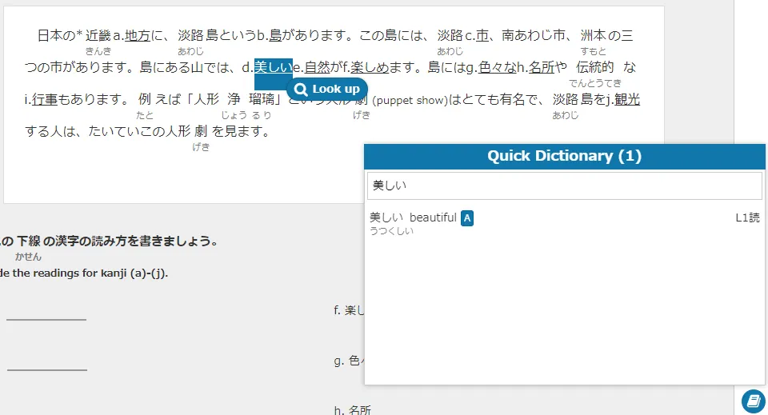

Sometimes you may find yourself at a roadblock, because you don't know how to read a kanji or don't know the meaning of a word. That's perfectly okay though, as it's all part of learning and sometimes we may forget. We'll go over a few ways that you can look up kanji/words you don't know while using Kantan Japanese.
Using the Quick Dictionary
Kantan Japanese has a standalone dictionary for looking up words and practicing them, and a quick dictionary built into non-vocabulary exercises. When it comes to looking up unknown kanji/words during an exercise, the quick dictionary is your best friend! Simply select the text, click "look up", and look through the search results for your answer. You can actually try it right now by looking up this word: 辞書！

If you're trying to select text for a multiple choice answer, simply click the "Enable Text Selection" button. This will allow you to select and look up kanji/words in answers.
Jisho Online Dictionary
The dictionary on Kantan Japanese contains definitions for all the words learned in each lesson + some common Japanese textbooks. Because of this, it will not have every word imaginable. Thankfully, there's an excellent online alternative called Jisho.org. This website will allow you to search in English, Japanese, by drawing, and even radicals for finding kanji you don't know how to type. So if you need to look up words outside of these textbooks, I highly recommend using this website.
- Link: Jisho.org
An alternative to Jisho.org that is open source is Jotoba. This has a lot of similar functions to Jisho and is a great alternative should Jisho be down for some reason.
- Link: Jotoba.de
Another one I highly recommend is Takoboto which also has an app that you can use offline on your phone. Plus you can save words you look up for studying later. It also has a grammar search which is useful for quickly refreshing on certian grammar points.
- Link: Takoboto.jp
Helpful Extensions
Aside from the methods mentioned prior, there exists extensions that allow you to look up the meanings of kanji/words simply by hovering over them! These, my friends, are like magic dictionaries where your cursor is a word-defining wand, and are wonderful to have on hand when needed. There's different ones for different browsers, so choose the one for your current browser. Personally I prefer Yomitan because it's more responsive and you can customize the dictionary.
- Yomitan (for Chromium-based browsers, such as Chrome, Opera, Brave. Also for Firefox and Edge)
- Rikaikun (for Chromium-based browsers, such as Chrome, Opera, Brave)
If you intend on using these offline as well, be sure to update your extension's permissions, which can typically be done by going to Extensions > Details (for that extension) and enabling "Allow access to file URLs." Instructions may be different (or not required) for Firefox.
Useful Programs
If you like using Novels or Manga for reading practice, then you know that sometimes you'll run into a kanji that stumps you. Thankfully there's an extremely useful program called KanjiTomo which can be used to identify kanji/words on-screen or in images, depending on how legible the font is. You can also open images directly in the program for easier navigation and identification. I highly recommend it to those who're just starting out and want to read some higher level material to challenge themselves and learn new words.
Another useful program is Capture2Text which is extremely useful for copying kanji when you're playing games in Japanese, so that you can look them up in Jisho. Just make sure to set the language and orientation manually.
Last but not least, the one tool I recommend most as of late is meikipop which released recently. This is an auto OCR for games and VNs that works very similarly to Yomitan. You set the OCR area and then you can hover over text in that area and get near instant lookups that are far more accurate than KanjiTomo or Capture2Text! If you practice or plan to practice with games/VNs, this is a MUST HAVE tool!